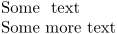

Contents
Summary
The instances of \startbuffer ... \stopbuffer are used for buffering text.
Instances
| \starthiding ... \stophiding | Hides the content of its environment. |
Description
Note that
\startbuffer
is not an instance of
startbuffer
. It has its own, more elaborate definition.
Examples
Example 1
-
Some \starthiding hidden \stophiding text \starthiding Arbitrary, potentially invalid \fi text \stophiding Some more text
gives
- 